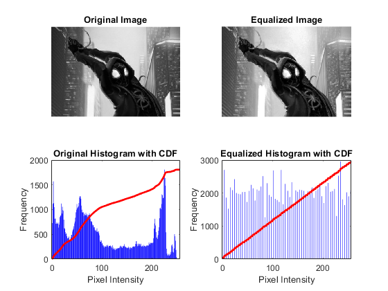

clc;
clear all;
close all;
I = imread('Utkarsh.png');
if size(I, 3) == 3
I = rgb2gray(I);
end
equalized_image = histeq(I);
[original_hist, bin_centers] = imhist(I);
original_cdf = cumsum(original_hist) / numel(I);
[equalized_hist, ~] = imhist(equalized_image);
equalized_cdf = cumsum(equalized_hist) / numel(equalized_image);
figure;
subplot(2, 2, 1);
imshow(I);
title('Original Image');
subplot(2, 2, 2);
imshow(equalized_image);
title('Equalized Image');
subplot(2, 2, 3);
bar(bin_centers, original_hist, 'FaceColor', 'blue', 'EdgeColor', 'none');
hold on;
plot(bin_centers, original_cdf * max(original_hist), 'r', 'LineWidth', 2);
title('Original Histogram with CDF');
xlabel('Pixel Intensity');
ylabel('Frequency');
subplot(2, 2, 4);
bar(bin_centers, equalized_hist, 'FaceColor', 'blue', 'EdgeColor', 'none');
hold on;
plot(bin_centers, equalized_cdf * max(equalized_hist), 'r', 'LineWidth', 2);
title('Equalized Histogram with CDF');
xlabel('Pixel Intensity');
ylabel('Frequency');
